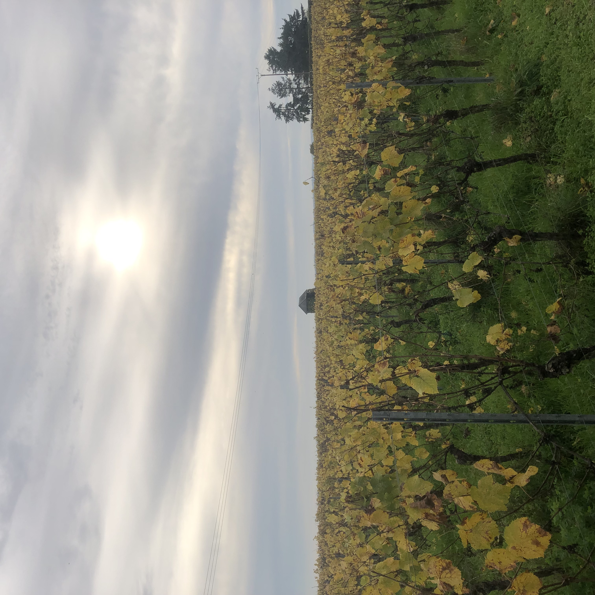
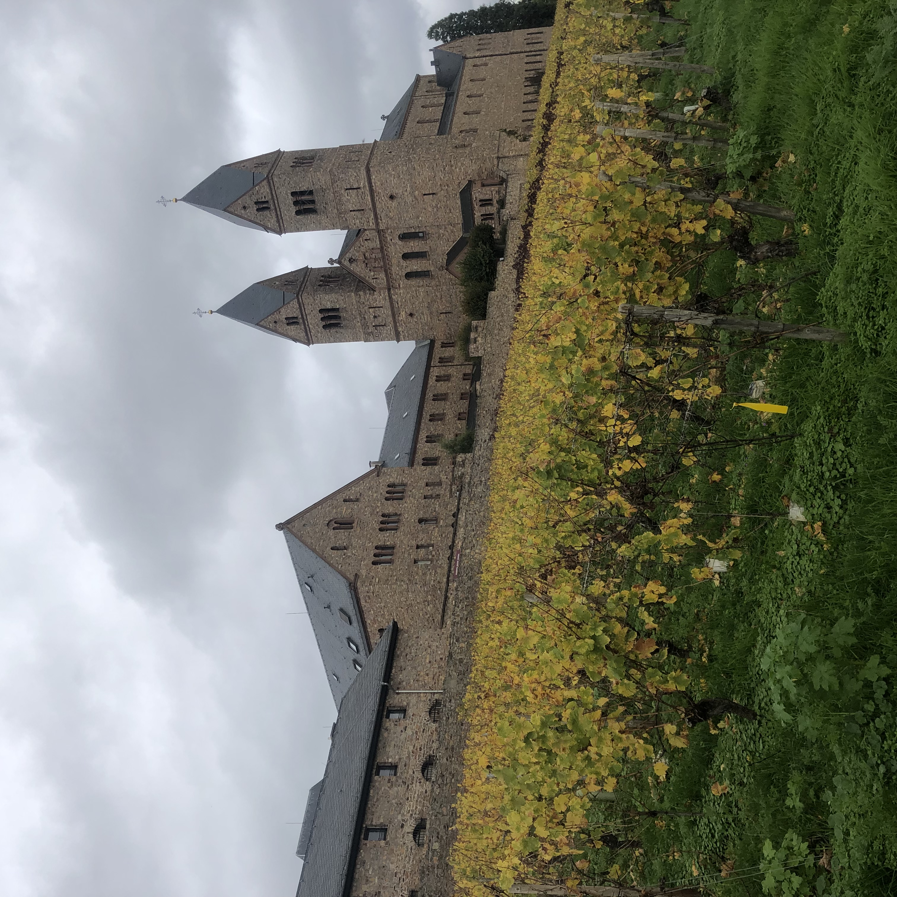
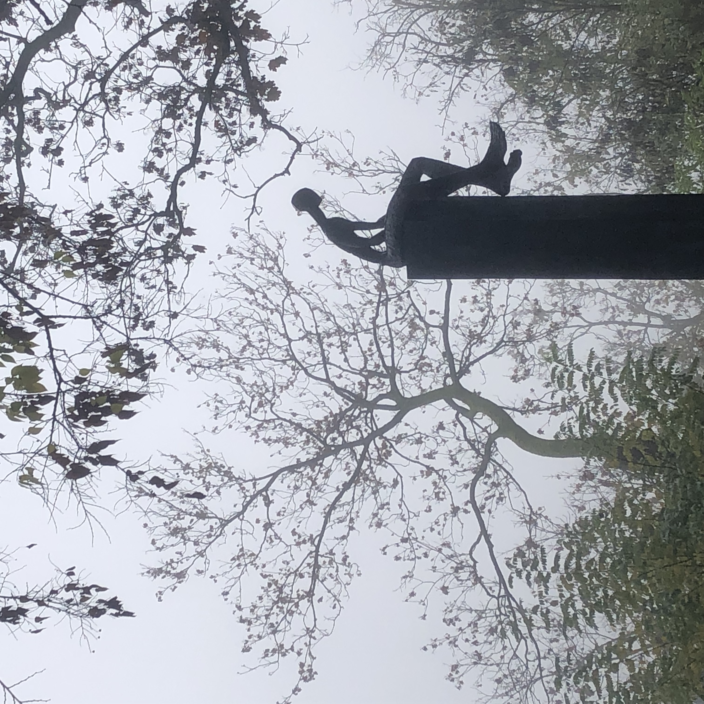
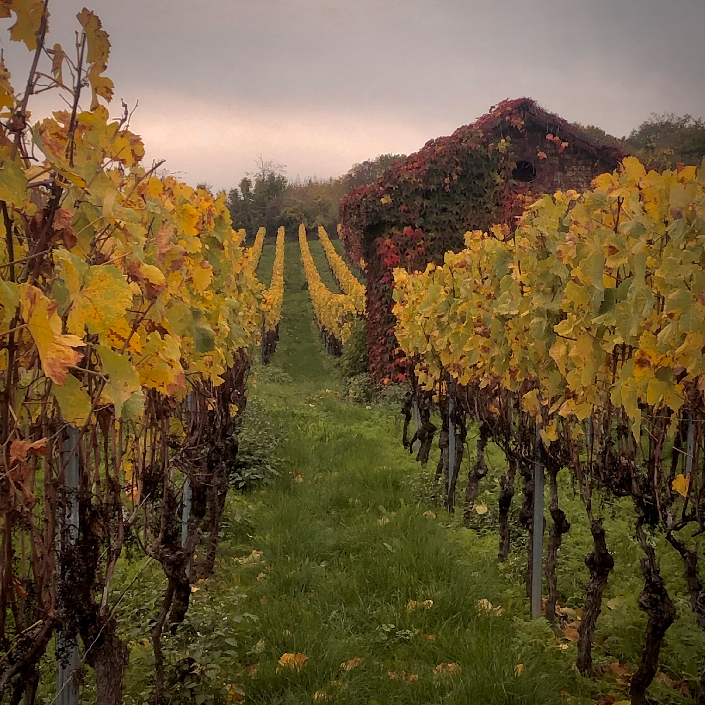

Stejně jako Adéla mám ráda cestování. Opravdu. Hory jsou taky moc fajn, ale já jsem podstatně línější. Čím jsem starší, tím víc jsem srostlá s Evropou. Zjistila jsem, že doslova za rohem můžeme najít mnoho vzrušujících míst. Můj poslední výlet byl do Německa, konkrátně do oblasti Rheingau, proslulé výborným vínem a místem, kde žila a působila jedna z nejinspirativnějších žen - sv Hildegrada z Bingenu. https://cs.wikipedia.org/wiki/Hildegarda_z_Bingenu
Občas si taky něco vyfotím. Na tyhle fotky nejsem možná tak moc pyšná, ale na mobil dobrý.
   